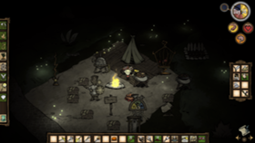

| This article is incomplete. Please help to improve the article, or discuss the issue on the talk page. |
Note: This guide is based on my experience in the game and may be subjective. -- Neoma
| This article is incomplete. Please help to improve the article, or discuss the issue on the talk page. |
Dont Starve Guide - Getting Started
This guide is aimed at helping you survive your first month in-game. This is not the only way to survive the first month, but one of them. Do not feel like this is the only way to survive. Also check out How to Survive by DUDETTE.
Try not to hurry to reach the end game. There's no easy way other than cheating but where is the fun in that? The first few weeks are crucial to your survival, do not lose focus.
Gather and carry resources when you can.
Prepare a Campfire once you have enough materials for it. How to prepare the campfire? By building the item and clicking your right mouse button, the item will not be placed and will just be stored in your game tab. The resources are consumed and you can continue to gather more without making more stacks. Do not place the campfire during the daytime. When you want to place your Campfire, you simply need to go back to the Light tab, and click 'Place', and then build as normal.
Around dusk, you still have enough time to gather resources.
Once you place a campfire near some resources. Gather them as soon as you can.
Be sure to cook some food in that campfire and consume. Do not let your hunger  get the best of you.
get the best of you.
Before the night ends, prepare another campfire. You will need it for your next journey.
Using resources carefully will go a long way. Do not create a fire pit on the first night. That's a waste of time and resources. Your current location may not be best for you to settle.
If this is your first night, you don't have to make a fire pit because you're likely not going to settle just yet. Set up a campfire right before night comes and surrounded by some resources, so you can gather them during the night.
As much as possible use logs to fuel your fire as they have a long burning time and are readily available.
Cliché as it may sound but don't starve, it is the most important thing to keep in mind. Cooked food is generally better than raw. (Note however that Seeds can be eaten raw without little benefit toCooked Seeds other than an added health point upon consumption. If you are running low on health, cook them first; If not, eat them whenever your Hunger bar is at 145 or wikipedia:Greater than less at the exception of having more potent foods )
On the first few nights, you can cook around 3 to 4 berries or carrots and eat them. This will be enough for you to survive the next day.
| “ | LOCATION! LOCATION! LOCATION! | ” |
| –[Citation needed] | ||
Dedicate day 2 and/or day 3 to look for a good location. At dusk, gather a few logs and grass for your campfire and don't forget the pine cones.
Points for a good location:
Dealing with emergencies scenarios like:
These encounters will make you lose your focus on your current objective. Thankfully, this is just the first week. So...onwards to our adventure!
| Getting past the first week | |
|  Guide for Beginners |
|
| Day 1 | Gather resources |
| Day 2 | Location, location, location |
| Day 3 | If location found, settle. |
| Day 4 | Gather resources |
| Day 5 | Gather more resources |
| Day 6 | Expand your base |
| Day 7 | Your base should be well set already. |

Base Camp Sample
Assuming that you have found a good location, you need to expand your Base Camp.
Placing items like the Science Machine, Alchemy Engine, Chest near your fire pit will be helpful. This way, you can refine, build, and organize during night time.
The image on the left is an example of my base camp. It may be a little cramped but its tightly semi-organized. This way, you won't have to use too much fuel to light up your surroundings.
If you find rabbit holes near your base, set traps just above it and leave it there. No need to put any bait.
| “ | The less effort, the faster and more powerful you will be. | ” |
| –Bruce Less, ---Deerclops is gonna get you if you do that.--- | ||
You may also want to read up on: Self-sustaining Settlement Guide
Put Lightning Rod near your chest and the farm. You don't want any of them burning when there's a thunderstorm. When it comes to being thrifty, placing a few lightning rod in your base will go a long way.
When gathering, focus on gathering only one type of resource for that day and keeping your sanity up while you're at it.
One of the best (if not good) way to boost your sanity is get two to three pigs to follow you and chop trees. Keep on chopping trees like a boss (or at least you have around 40 pieces of logs). You will notice a big arrow on your  meter. Pick the logs later during dusk or on your way back to base. And make sure that it's not a full moon. If this is the case, your befriended Pigs will all turn into aggressive Werepigs, which can be as dangerous as Hounds if the player does not expect it.
meter. Pick the logs later during dusk or on your way back to base. And make sure that it's not a full moon. If this is the case, your befriended Pigs will all turn into aggressive Werepigs, which can be as dangerous as Hounds if the player does not expect it.
Every time you go back to your base camp, organize your chest and see what type of resource you need to stock up. That'll be your objective the next day.
Hounds are nasty creatures. They will attack you day or night but at least they give off sounds and alert your character. You can use the pigs or beefalo to help you survive against them.
There is a guide on how to protect yourself and its worth a read: Hound Wave Survival Guide.
Dedicate this week for extra supplies and set aside two pieces of Winter Hat or Rabbit Earmuff. Depending on your game preferences on the 21st day, winter start and end on day 37.
Read up on the Winter Guide Tactics.
| Game Guides | |
| Basic | Getting Started • All About Night |
| Camping | Base Camp • Frog Pond Camp • Self-sustaining Settlement • Marsh Camp • Camping Underground |
| Farming | Gold Nugget Farm • Renewable Farming • Woodie's Curse • Farming • Nightmare Fuel Farming |
| Survival | Adventure Mode • Mob Killing • How To not starve • How to survive • Hound Wave Survival • Mushroom Guide • Spelunking Guide • Winter Guide • Crock Pot Dishes • Teleportato Rush Guide • Panic Room Guide • Just Spawned • Advanced World • World vs Caves |
| Technical | Excrement Extraction Guide • Physical Damage Absorbtion • Console Commands |
| Characters | Wendy • Wolfgang • Wickerbottom's Books |
{kind=link}
{kind=link}
{kind=link}
{kind=link}
{kind=link}
{kind=link}